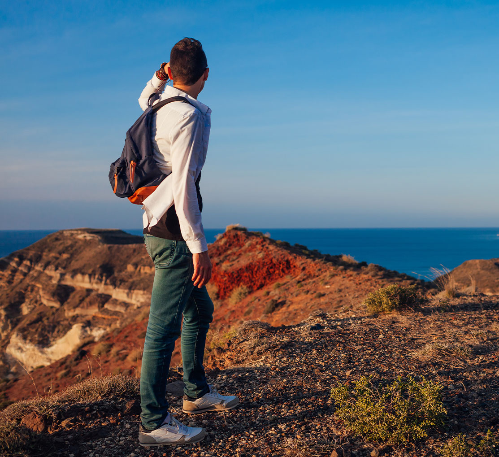
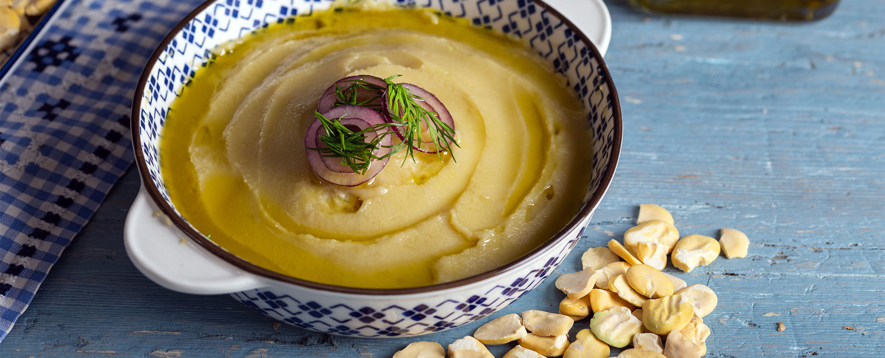

来一趟圣托里尼吧。这里的每一场日落都在讲一个故事，每一眼风景都让人挪不开目光。它坐落在基克拉泽斯群岛的最南端，把静谧的美与历久弥新的优雅揉在一起，等着你亲自来感受这份独一无二的魅力。
继续探索

沿着圣托里尼的徒步小径走一走，你会撞见岛上最叫人屏息的那些风景。一路走过嶙峋的海岸，听一听岛屿流传下来的传说，再拐进那些传统村落，看看当地人到底过着怎样的日子。
查看路线
圣托里尼的火山土壤孕育出了别处没有的风味——小巧却浓郁的圣岛番茄、口感绵密的黄豌豆泥、带着矿物气息的阿斯提可葡萄酒。在这里，每一道菜都是这座岛屿写给你的情书。
品尝更多